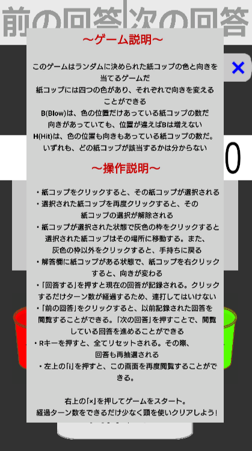

端末の時刻を読み取り、それをTurtleで表記するデジタル時計。
一分ごとに更新ではなく、読み取った時刻を常に更新し続け、1秒以下の時に時刻を更新するようにしたことによって、実際の時刻と数秒、数十秒単位のズレを回避。
こちらから
listに記載されたデータをもとに、print関数によってマップの生成、プレイヤーの移動、
ダイアログボックスの生成、ダイアログボックス内でのテキストの生成、アイテムの取得と使用、
廃棄、アイテムの情報の閲覧を行うことができる。
こちらから
裏でランダムに決められた紙コップの色と向きを推理して当てるゲーム。
4つの紙コップにはそれぞれ別々の色があり、それぞれの紙コップは上下で向きを変えることができる。
B(Blow):色の位置だけ合っている紙コップの数。向きは無関係。
H(Hit):色の位置も向きも合っている紙コップの数。
どちらもどの紙コップが該当するかはわからない。紙コップを入れ替えながらどれがHitで、どれがBlowかを推理する必要がある。

プレイはこちらから
こちらからダウンロード
360度全方向に弾を放つことのできる新感覚2Dシューティングゲーム。
WASDで移動して、クリックでマウスの方向に弾を放つことができ、直観的に操作することができる。
スライムの種類は
・まっすぐプレイヤーに向かってくるブルースライム
の1種類、今後も追加予定。
スライムにぶつかると体力が減り、体力がなくなるとゲームオーバー。スライム討伐のポイントが表示され、リスタートもしくはゲームを終了できる。
今後は回復アイテムや画面全体攻撃、タイムアタック、上に提示した要素の設定を簡単に行うことのできる設定画面などの要素を追加予定。
すべてのイラストを自分で制作。完全オリジナル。
スライムにもHPを設定して、弾にダメージ量を設定したほか、スライムのスピード、弾の減衰率や初速や残留時間、スライムの出現スピード、マップチップの大きさなどを比較的簡単に設定できるようにした。それにより、様々なゲーム難易度で遊ぶことができる。
リポジトリはこちらから
制作時間：約43時間
COC（クトゥルフ神話TRPG）のシステム・戦闘技能・能力値決定システムを流用し、そこに心理戦や
それに伴うバランス調整というオリジナル要素を詰め込んだPvEの心理戦ゲームである。
まずそれぞれの能力値がランダムに決定され、そこから自分と相手の素早さ（ゲーム内ではDEXと表示）
を比較して先攻後攻が決められる（同一の素早さの場合は、1D100、つまり100の面があるサイコロを1回振り、
出目が小さいほうが先行）。
自分のターンでは左側に表示される戦闘技能を選択するラジオボタンから使用する戦闘技能を選択し、
準備完了のボタンを押すと結果が表示される。このとき、1D100が振られ、その数字が選択した戦闘技能の
成功率と同じ数字かそれよりも低かった場合は攻撃成功となり、数字が戦闘技能の成功率より高かった場合は
攻撃失敗となる。すべての技能は基本何度でも使用できるが、「拳銃」技能だけは弾薬が3発しかないことに
留意しなければならない。
相手のターンでは相手が選択した戦闘技能の成功率が表示されるため、そこから相手の選択した戦闘技能
を仮定し、左側に表示される守備技能を選択するラジオボタンから適切な守備技能を選択する。この時、
攻撃技能と守備技能の特性を理解していることが重要である。
「回避」技能は比較的成功しやすく、成功時に攻撃を受けなくなる。しかし、失敗時はすべての
ダメージを受けるほか、速度が高速の攻撃は回避することができない。
「防御」技能は成功しにくく、また受けるダメージ量が高いほど成功率が低くなる。その代わりに、
回避と同様成功時に攻撃を受けなくなり、失敗時も数字が低くなるほどダメージを軽減する効果を持ち、
戦闘技能の特性に関係なく使用することができる。
「反撃」技能は相手の攻撃を完全に受け、軽減・無効化をすることはできない代わりに相手に非常に
高い確率で追加のダメージを与える。ただし自分と相手が同時にHP0以下になった場合は戦闘技能での
死亡が優先される他、遠距離攻撃に反撃することはできない。
また、本ゲームではCOCの特徴でもある「クリティカル」「ファンブル」のルールを採用している。
戦闘技能を振る際に5以下が出た場合はクリティカルとなり、ダイス数が二倍になる。95超過が出た場合は
ファンブルとなり、転んで1ダメージを受ける。
リポジトリはこちらから